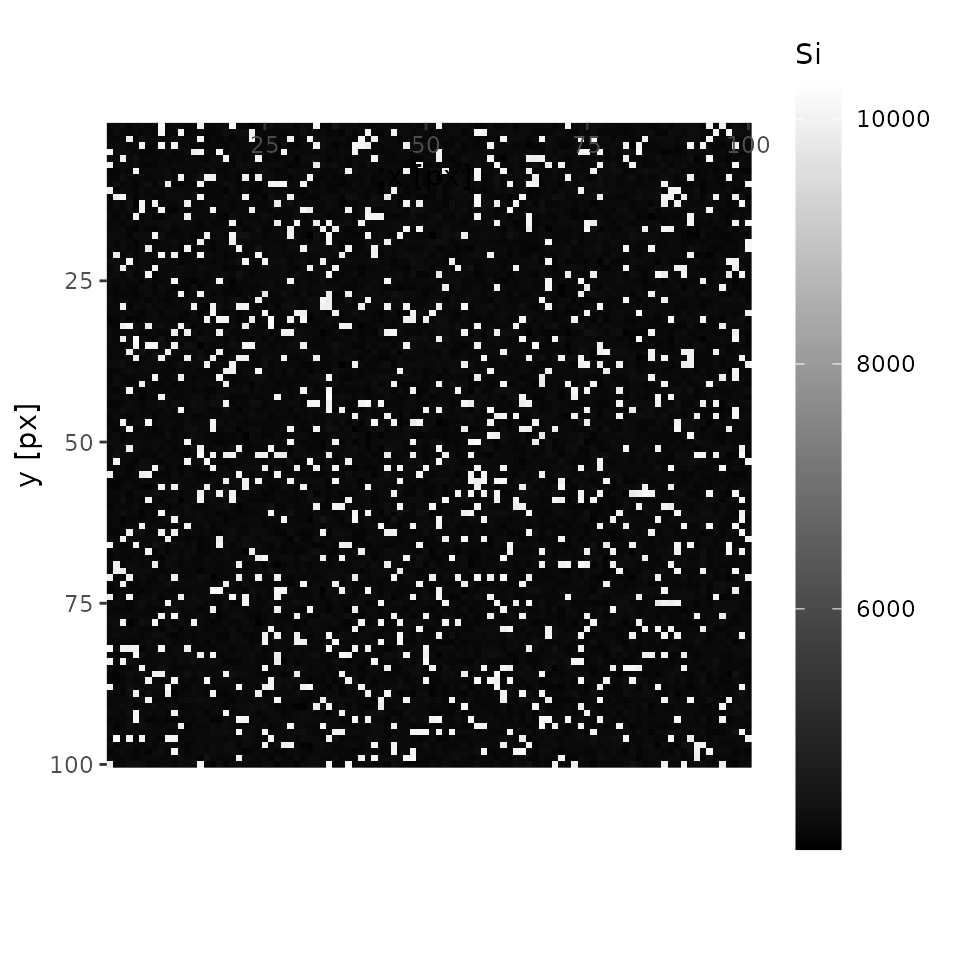
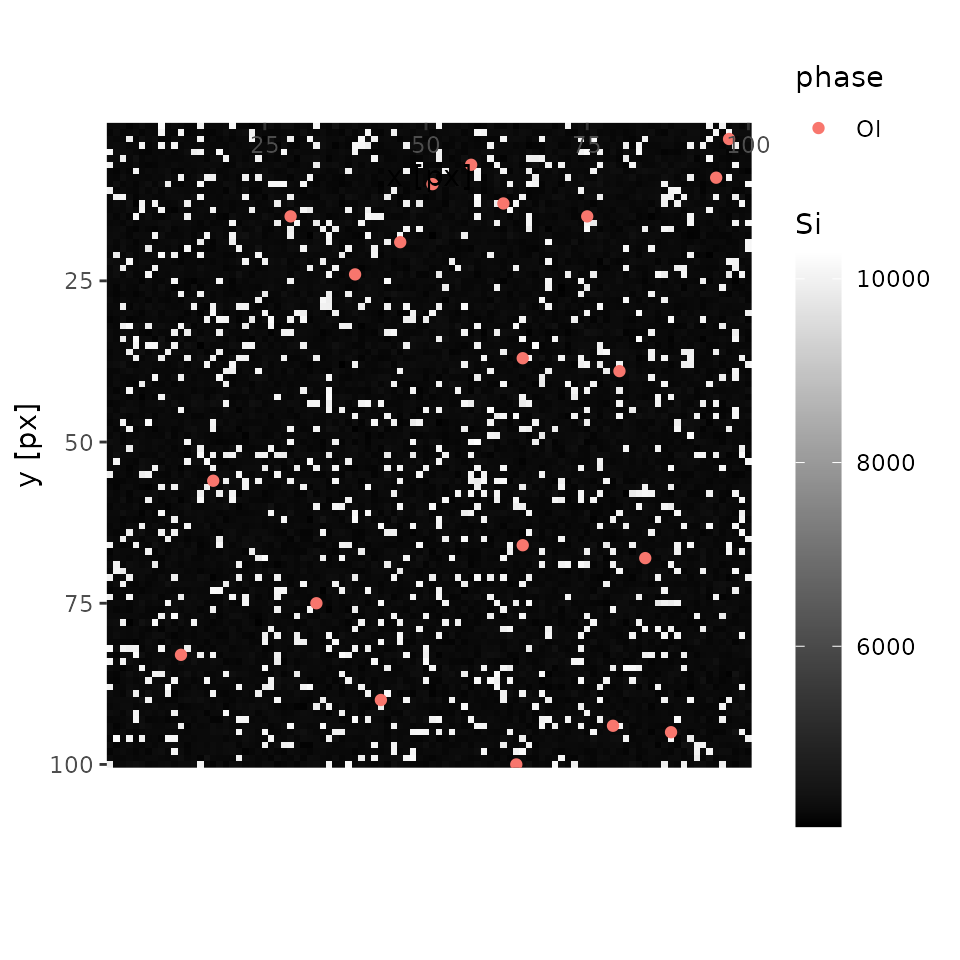
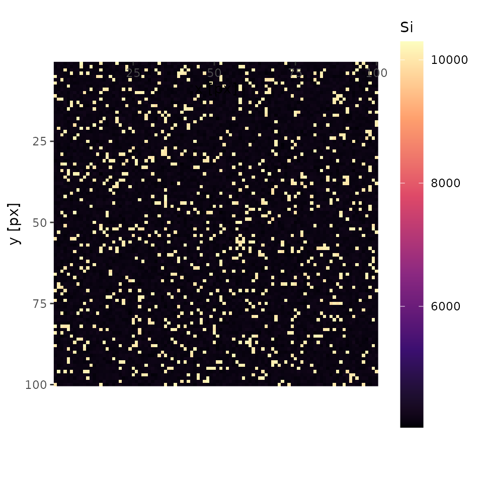

vignettes/add_phase.Rmd
add_phase.RmdThis document introduces a way to quantify X-ray map even if, in accident, there are some phases without spot analysis. For accurate analysis, I highly recommend careful observation prior to EPMA analysis, so that as less phases as possible being missed.
Please read “Get started” before hand.
This section prepares package, files, and modify sample data. An original sample dataset is same as that used in “Get started”. However, the dataset will be modified to let a phase be not analyzed by EPMA spot analysis. This is why “Specify directories containing data” and “Load Data” belongs to “Preparation” despite they belongs to Analysis section of “Basic usage”.
or any original data.
file.copy(
from = system.file('extdata', 'minimal', package = 'qntmap'),
to = wd,
recursive = TRUE
)
#> [1] TRUETRUE indicates files are successfully copied. Check if really files are copied by dir().
dir(file.path(wd, 'minimal'), recursive = TRUE, all.files = TRUE)
#> [1] ".map/1/0.cnd" ".map/1/1_map.txt" ".map/1/1.cnd"
#> [4] ".map/1/2_map.txt" ".map/1/2.cnd" ".qnt/.cnd/elemw.cnd"
#> [7] ".qnt/bgm.qnt" ".qnt/bgp.qnt" ".qnt/elem.qnt"
#> [10] ".qnt/elint.qnt" ".qnt/mes.qnt" ".qnt/net.qnt"
#> [13] ".qnt/pkint.qnt" ".qnt/stg.qnt" ".qnt/wt.qnt"
#> [16] "conditions_qnt.csv" "conditions_xmap.csv" "README.md"In the original dataet, 20 spots are analyzed by EPMA on both olivine and quartz.
table(qnt$cnd$phase)
#>
#> Ol Qtz
#> 20 20Let’s delete quartz from dataset and reload.
After read_qnt() is performed, a file phase_list0.csv is created under working directory. This file consists of 3 columns id, phase, and use.
Edit only phase and use. Do not edit id. If certain phases have large compositional variations, fill phase column with different names. (e.g., Ol_Fe and Ol_Mg for Fe-rich olivine and Mg-rich olivine). If certain analysis show bad results, fill use column with FALSE, otherwise TRUE.
To do it on R, execute codes below. Be sure to specify a path to modified csv file to phase_list parameter of read_qnt. Also, renew parameter of read_qnt must be TRUE.
phase_list <- read.csv('phase_list0.csv')
phase_list$use[phase_list$phase == 'Qtz'] <- FALSE
write.csv(phase_list, file.path(dir_qnt, 'phase_list_no_qtz.csv'))
qnt <- read_qnt(dir_qnt, phase_list = file.path(dir_qnt, 'phase_list_no_qtz.csv'))After editing, only olivine is said to be quantified.
table(qnt$cnd$phase)
#>
#> Ol Qtz
#> 20 20
centers <- find_centers(xmap, qnt)
centers
#> phase Si Mg
#> 1 Ol 4263.8 5722.45
plot(xmap, 'Si', interactive = FALSE)
In this case, an analysist will notice there is something other than olivine. Let’s mouse over the interactive map and one will see one of the coordinates of quartz (e.g., x = 18, y = 28). Keep it on your note.
Add initial centers by using add_centers.
centers <- add_centers(centers = centers, xmap = xmap, x = 18, y = 28, p = 'Qtz')Then, Qtz is properly added to centers.
print(centers)
#> phase Si Mg
#> 1 Ol 4263.8 5722.45
#> 2 Qtz 10126.0 0.00centers_initial0.csv in the current directory (try getwd() on R if unknown).centers <- read.csv('path to an updated csv file')
As Qtz is not quantified during spot analysis, calibration curves for Qtz is substituted by results of regression analysis without considering different phases. Try “Quasi-calibrations” in case phases not quantified have known and constant chemical compositions.
cluster <- cluster_xmap(xmap, centers)
qmap <- quantify(xmap, qnt, cluster)
summary(cluster)
#> Ol Qtz
#> 1 0.9000567 0.09994333
summary(qmap)
#> Element Min. 1st Qu. Median Mean 3rd Qu. Max.
#> 1 SiO2 40.54 42.49 42.97 48.69 43.52 103.91
#> 2 MgO 0.00 56.46 57.10 51.49 57.68 59.87
#> 3 Total 96.43 99.46 100.18 100.18 100.88 104.37In case phases without spot analysis have known chemical compositions, their calibration curves can be calculated by specifying their chemical compositions in csv format.
For example, prepare a csv file, and specify it to fix parameter of quantify().
csv <- paste(
'phase, oxide, wt',
'Qtz, SiO2, 100',
sep = "\n"
)
cat(csv)
#> phase, oxide, wt
#> Qtz, SiO2, 100
qmap2 <- quantify(xmap, qnt, cluster, fix = csv)
summary(qmap2)
#> Element Min. 1st Qu. Median Mean 3rd Qu. Max.
#> 1 SiO2 40.54 42.49 42.97 48.54 43.52 102.41
#> 2 MgO 0.00 56.46 57.10 51.49 57.68 59.87
#> 3 Total 96.43 99.34 100.04 100.03 100.73 104.37Of course, csv parameter can be a path to a csv file, unlike the above example, which gave csv data the csv parameter.